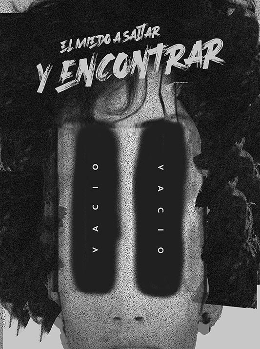
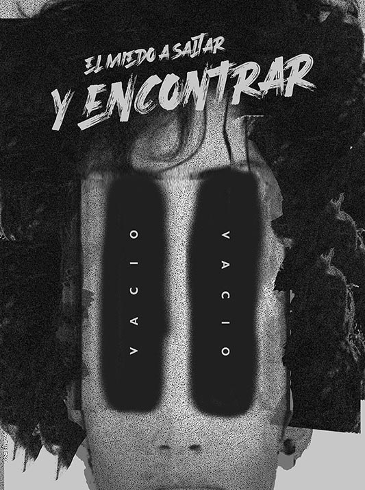

ARRANCÁMELO
- Estamos siendo cuidadosos
- Como caminando por un piso resbaloso
- Sabiendo que un paso en falso nos lleva al fondo del pozo
- Será lo tembloroso de la espuma bailando en mi corazón rabioso
- Entender todo es un poco soberbio
- Querer explicar todo es un poco por nervios
- Por eso hablo hasta por los codos si me pongo ebrio
- Y ya no sé si jodo o me lo tomo en serio
- Y desconfío, el miedo a dar un salto y encontrar vacío
- Ansío que esto que siento no sea mío
- ¿Por qué de pronto se siente tan frío?
- Parece que saber hacerse bien es todo un desafío


 Volver
Volver